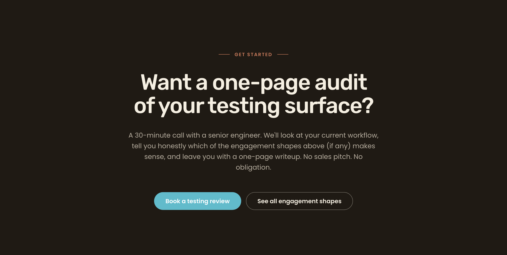
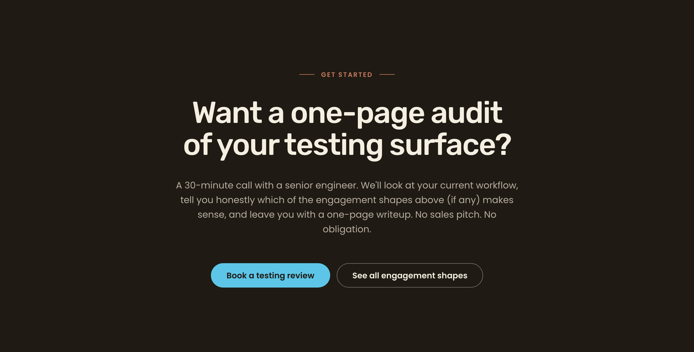
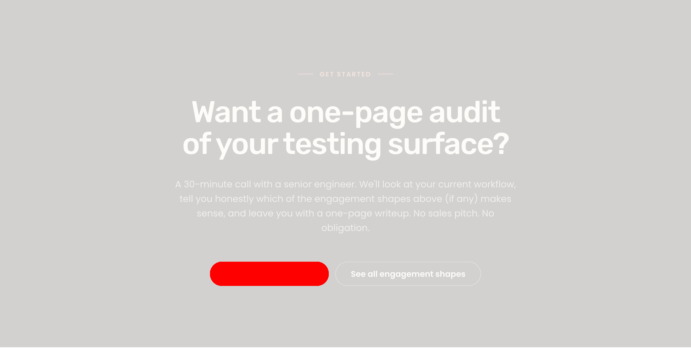
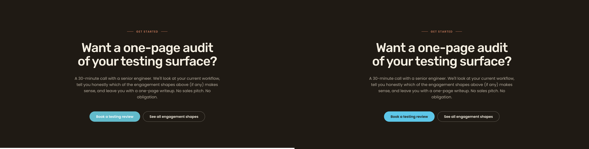

What I see different (plain English)
- §E "Book a testing review" button changed from white-on-aqua (
#62BBCB+ white) to dark-on-light-blue (#5DC6E8+#1F1A14). This is the intended fix — it matches the brief's dark-zone CTA token (line 319). - Nothing else moved. The headline "Want a one-page audit of your testing surface?", the body copy below it, the "GET STARTED" eyebrow, and the "See all engagement shapes" ghost button beside the primary CTA all render identically pre-fix and post-fix at the pixel level.
- No light-zone CTA was affected. The override selector is scoped to
.closing-cta .btn--primaryand this page contains exactly one.btn--primaryelement (inside the closing CTA). There were no light-zone primary buttons on the page that could regress.
Git diff vs main (only file changed in this cycle)
diff --git a/docs/pl2/Previews/how-we-do-it.html b/docs/pl2/Previews/how-we-do-it.html
@@ -425,6 +425,8 @@
line-height: 1.6;
}
.closing-cta__ctas { display: flex; gap: var(--space-md); justify-content: center; flex-wrap: wrap; }
+ .closing-cta .btn--primary { background: #5DC6E8; color: #1F1A14; }
+ .closing-cta .btn--primary:hover { background: #4AB8DA; color: #1F1A14; }
/* ---------- Footer ---------- */
.footer {
Post-fix computed styles (Playwright, 1280×800 @ DPR 2)
| Property | Computed | Expected (brief line 319) | Status |
|---|---|---|---|
background-color | rgb(93, 198, 232) = #5DC6E8 | #5DC6E8 | MATCH |
color | rgb(31, 26, 20) = #1F1A14 | #1F1A14 | MATCH |
| pill width × height | 220.14 × 45 px | ≥ 44 px tap height | PASS |
document.querySelectorAll('.btn--primary').length | 1 | 1 (only the closing-cta button) | MATCH |
Closing-CTA @ 1280 — preview pre-fix ↔ preview post-fix (wipe slider)
Drag the slider. Left half = post-fix (current preview). Right half = pre-fix (Cycle 1 baseline, recovered from commit 683958c98).


POST-FIX (Cycle 2) PRE-FIX (Cycle 1)ImageMagick AE diff (red = differing pixels)

Side-by-side composite

Per-section delta table
| Section | Viewport | Status | Description |
|---|---|---|---|
| §E closing-cta primary button face | 1280 | DELTA (intentional) | Changed from aqua-on-white to light-blue (#5DC6E8) with espresso text (#1F1A14). This is the intended brief-line-319 fix. |
| §E headline / eyebrow / body copy | 1280 | MATCH | Pixel-identical pre/post. |
| §E "See all engagement shapes" ghost-on-dark sibling | 1280 | MATCH | Pixel-identical pre/post (different selector entirely). |
| Hero, §B (audit), §C (dogfood), §D (takeover), §"what we don't do", footer | 1280 | N/A | Out of scope for this cycle — preview-doc edit is scoped to .closing-cta .btn--primary and these sections contain no .btn--primary elements. |
| F-NEW-15-A (H2 mobile mismatch) | 375 | CARRY (Cycle 3) | Unchanged. Out of scope for this cycle. |
| F-NEW-15-B (orphan "runs.") | — | CARRY (Cycle 4) | Unchanged. Out of scope for this cycle. |
| F-NEW-4 (live CTA chrome chevron-circle) | all | CARRY (live-theme work) | Still drives closing-cta@1280 DSSIM at 0.205. Live-theme scope, not addressed by preview-doc edit. |
WCAG 2.2 AA spot audit (scoped)
| Check | Result | Notes |
|---|---|---|
| Primary CTA text contrast | PASS | #1F1A14 on #5DC6E8 = 8.81:1 (≥ 4.5:1 AA, ~96% headroom). |
| Primary CTA hover contrast | PASS | #1F1A14 on #4AB8DA = 7.53:1. F handoff overstated as 9.39:1; correct value is 7.53:1. Both clear AA by wide margins (informational only). |
| Focus ring contrast on espresso | PASS | #1893B4 on #1F1A14 = 4.83:1 (≥ 3:1 non-text). |
| Touch target | PASS | Rendered pill = 45 px tall ≥ 44 px. |
| Reduced-motion / forced-colors / 200 % zoom | N/A | Color-only change. No transition, transform, or animation added. No DOM, layout, padding, font-size, or border-radius change. |
Advisory notes (non-blocking)
- Hover ratio overstatement carry-forward. F said 9.39:1 for hover contrast; correct value is 7.53:1. No WCAG impact (both clear AA by wide margins). Worth correcting in future handoffs.
- F-NEW-4 still drives section DSSIM. Closing-cta@1280 DSSIM remains 0.205 because live uses a 56 px dripyard chevron-circle pill vs preview's 45 px flat pill. Out of scope for preview-doc cycles.
- Cycle-1 artifact churn. F re-ran the cycle-1 capture/diff scripts, which re-wrote ~151 PNG/JSON artifacts in place (byte deltas from font-render jitter; per-section DSSIM/PSNR unchanged). Operator may want to
git checkoutthe cycle-1 directory before merge, or accept the regenerated set.